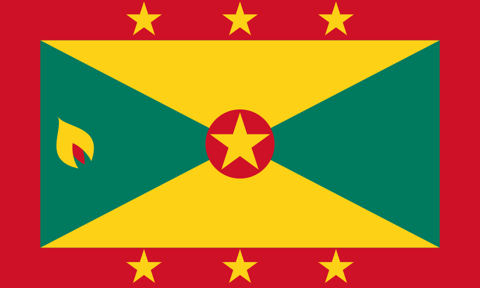

A Ilha das Especiarias

Granada é um país insular localizado no Caribe, famoso por suas praias e especiarias.
Capital: St. George's
Idioma: Inglês
Moeda: Dólar do Caribe Oriental
Ver mais sobre GranadaA cultura mistura influências africanas, europeias e caribenhas, com destaque para o Carnaval.
ver mais